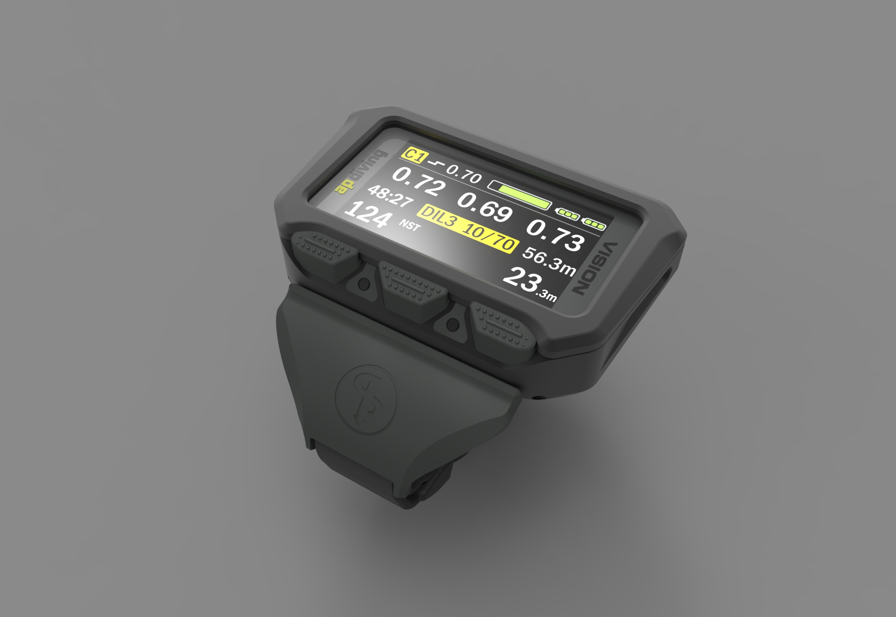
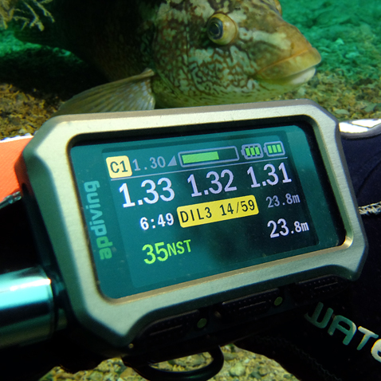

üåä A Dive-Computer Interface
Intern Designer - 1yr
Introduction
I was employed as an intern for 1 year at a (AP Diving) a dive equipment company. One of my assignments was the redesign of their dive computer interface, its a wrist mounted computer that monitors critical aspects of the divers equipment.
Problem
I was asked to redesign the computer display with a new LCD screen colour screen because the company was falling behind in this market area.
Limitations were that the software was to remain the same thus restricting the screen to four stacked 56 pixel bands and with the added constraint that no two colours may touch.
The deadline was 2 months.
Research
The main users of our equipment were male between 30 and 60 years. Interestingly almost 10% of males in that age bracket are colour blind.
I found that existing dive computers were far more advanced than ours and demonstrated a heavy use of skeuomorphic design techniques.
Apple’s Human Interface Guidelines (at the time) showed me that actually competitive dive computers were not using best interface practices and that taking away distraction where possible would help with the interpretation of data. It was also evident that Apple made use of visual hierarchy and company colours to help deliver meaning.
I collaborated with the in-house divers to determine what they need to know in order of importance during a dive.
One thing remained obvious and that is the fact that the computer is essential to the divers life, therefore the clarity of information was my highest priority.
Design
I sketched concepts and collaborated with the divers in order to develop the visual elements and platform architecture. I presented to the company leaders my design including a colour blind version. This led to minor tweaks and various other colour themes.

Product
I applied the AP Diving signature yellow throughout the default interface for continuity.
I used the Helvetica typeface for better readability and ensured that the type met WCAG accessibility guidelines.
I embraced the AP Diving signature yellow as an opportunity to highlight important information, green for good and red for warning.
The graphical layout complements both the previous dive computer and the AP HUS (Head-Up Screen) offering an intuitive, seamless transition for existing customer divers.

Result

DIVER Magazine placed the Vision2020 Handset in 3rd place as product of the year out of an impressive lineup of products.
Take-away
This was my first interface design task and I thoroughly enjoyed it.
If I were to do it again I would prototype the interface for testing.
Other work